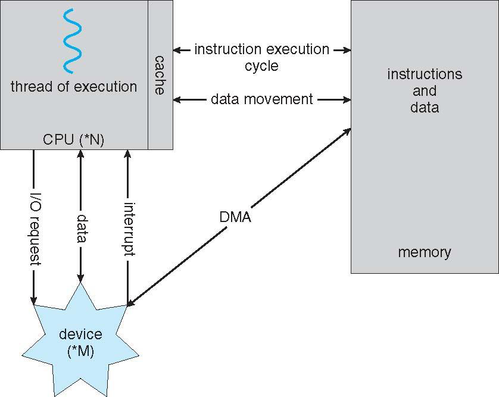

Operating Systems
Basics of OS notes
Operating Systems
A program that acts as an intermediary between a user and a computer and its hardware. Computer Hardware → Operating System → System and application programs → Users. Operating system is a resource allocator and a control program. Kernel is the one program that runs at all the times on a computer. A bootstrap program which is stored in ROM/EPROM [Erasable Programmable Read Only Memory]/EEPROM [Electrically EPROM] is loaded by kernel at power-up or reboot. CMOS [Complimentary metal oxide semiconductor] is a small memory in motherboard that stores BIOS [basic Input/output System] settings.
Now, I/O and CPU can execute concurrently. Direct memory access (DMA) [DMA is direct memory access] There are device controllers which are in-charge of particular device type and each of such device controller have its own local buffer. Each device controller has a device driver to manage I/O. I/O is from device to local buffer of controller where as CPU works between main memory and local buffers. Completion of I/O is informed to CPU causing interrupt. Interrupt transfer control to ISR [Interrupt Service Routine] using interrupt vector [Contains addresses of all the service routines]. A trap/exception [Exceptions are interrupts triggered by the CPU itself wich can further be clsassified as Aborts and Traps. Aborts are things that prevent the interrupted code from continuing. These are things that indicate a major problem - e.g. division by zero, hardware failures, etc. Whereas Traps are things that don’t prevent the interrupted code from continuing. These can be used for debugging, for virtual memory management, etc.] is software generated interrupt. Operating system is said to be interrupt driven. After an interrupt, OS preserves state of CPU by storing registers and Program counter. I/O subsystem is responsible for spooling [Overlapping og output of one job with input of other jobs], buffering and caching. There are two possible I/O structures : After I/O starts control returns to user program can be either be given only upon completion or can be returned without waiting for I/O completion. In the later case, OS uses 1) System calls are basically request to OS to allow user to wait for I/O completion and 2) Device status tables contains entry for each I/O device indicating its type, address and state.
Storage Structure : 1) RAM : Volatile, random access, storage media that CPU can access directly 2) Secondary storage is non-volatile extension of Main memory. Caching is copying information into a faster storage system temporarily. Magnetic Tapes → Optical Disks → Hard disks → Solid-state disks → Main memory → cache → registers. Cache is smaller than storage that is being cached and its management is a important design problem.

Von neumann Architecture
Multiprocessor systems are also known as parallel or tightly coupled systems. These have higher throughput, economy of scale and increase reliability because of graceful degradation and fault tolerance. In Asymmetric Multiprocessing each processor performs specific task whereas in symmetric each processor performs all the tasks. There are clustered systems which share storage via a SAN [Storage Area Network]. Asymmetric clustering is when one machine stays in hot stand-by mode whereas in symmetric all machines look after each other. Clustering can be used for HPC [High Performance Computing] using parallelisation. There is DLM [Distributed Lock Manager] mechanism to avoid conflicting operations. Cache coherency [all the CPUs shall have the most recent values in their cache] is required.
Multiprogramming and Multitasking : Multiprogramming is batch system where job scheduling is done so that single user cannot keep CPU and I/O busy at all the times and ensures that CPU always has one to execute. For ex, when I/O happens, we have to wait, so for that time OS switches to another Job that is kept in memory. Batch interfaces thus are non-interactive where user specifies all the details in advance for a batch job and receives output when all the processing is done. Multitasking on other hand is timesharing which is logical extension in which CPU switches job so frequently that users can interact with each job while it is running creating pretence of interactive computing. Swapping, virtual memory, CPU scheduling, managing response time are all part of multitasking.
Operating systems do have dual mode - 1) User Mode 2) Kernel Mode. Mode bit is provided by hardware. Now a days more and more CPUs are also supporting multi-mode operations.
A process is a program in execution. It is a unit of work within system. Each thread has a program counter specifying the location of next instruction to execute.
Kernals have singly linked list, doubly, circular linked list, binary search tree or even hash maps and bit maps. Computing environments can be traditional, mobile (android), distributed (Network Operating System), Client-Server, Peer-to-peer (Gnutella, Voice over IP, Napster), Virtualized (Citrix XenServer, VMware Elastic Sky X), cloud computing [Loda balancing is essential along with firwalls and cloud custome interface.] (Logical extension of virtualization ex, Amazon Elastic Compute Cloud (EC2) : Now, these can be SaaS (software), PaaS (platform), IaaS (infrastructure) ), Real time embedded systems. There are various open source OSes which counter to copy protection and Digital Rights Management (DRM) systems.
Operating System Services include a) User interface b) Program execution c) I/O operations d) File system manipulations e) Communications f) Error detection g) Resource allocation h) Accounting i) Protection and Security

System call is a programming interface to service provided by OS which are typically written in C/C++ and accessed by programs via a high-level API calls rather than direct use. Typically a number is associated with each system call, system call interface maintain a table indexed according to this number.

API working of system calls
Some systems have a program known as registry which is used to store and retrieve configuration information. Policy is what to do and mechanism is how to do?

Types of System Calls

Android Architecture
Debugging in OS is finding and fixing errors/bugs. Log files are generated containing error info. Core dump [When Application fails] and Crash dump [When OS fails/crashes] and trace listing. Profiling is periodic sampling of instruction pointer to look for statstical trends. Kernighan s Law: Debugging is twice as hard as writing the code in the first place. Therefore, if you write the code as cleverly as possible, you are, by definition, not smart enough to debug it. Dtrace tool allows live instrumentation on production systems by firing probes within a provider and captures state data and sends it to consumers of these probes. SYSGEN program obtains information concerning configs of hardware and compiles system-tuned kernal which is more efficient for that particular set of hardware. GRUB [GNU GRand Unified Bootloader] allows selection of kernal from multiple disks, versions and options.
Process
In batch systems, processes are usually called jobs and in time-shared systems tasks. A process has multiple parts, viz. text section which is program code, program counter, process registers, stack for temporary data and data section with global variables and heap which is dynamically allocated memory during runtime. Thanks to virtualisation, each process has its own address space. Information associated with each process is stored in PCB (Process control block).

States of a process
PCB also contains CPU scheduling info, memory management info, accounting info, I/O status information. Process number (PID)

Context of a process is stored by virtue of registers and PCB. So here one process have a single program counter i.e single thread. task_struct is used for representing a process in C. Process scheduler have Job Queue, ready queue, device queue and processes migrate among these queues.

Short term scheduler is frequently invoked to select next process for CPU allocation. Long term scheduler (Job scheduler) selects which processes shall be brought into ready queue in turn controlling degree of multiprogramming. The long term scheduler strives to maintain a good mix of I/O bound and CPU bound processes. If degree of multiprogramming needs to be decreased, a medium term scheduler can be added which swaps processes in and out of memory.
Parent processes can create children, forming a tree of processes. A child duplicates parent’s address space. System calls associated are,fork()→creation of child process, exec()→replace the process memory with new program exit()→a process calls after execution of last statement wait()→provides the status information and return pid, abort()→can terminate child process. Zombie: Whenever a child process is started an entry is added in process table and that entry is removed only after the child exits and parent gets this status of exit via wait system call which is called reaping, but if that wait call is not invoked, then this entry stays there called as zombie (even if wait is invoked small time period between exit and removing entry, that process is a zombie). Often parent is yet to invoke wait. Zombies are usually transferred to init for dealing. Orphan: If parent terminates without invoking wait the child is called orphan.
Processes within a system may be indpendent or cooperating. IPC [Interprocess communication] required. Shared memory and message passing are two models for IPC. Producer-Consumer problem deals shared memory model. Bounded buffer only Buffersize-1 item shared. In message passing send() and recieve() are used on a communication link which can be physical like bus, network, shared memory or logical (direct, indirect, synchronous/asyn, automatic/explicit buffering). Indirect uses mailboxes (ports). Blocking is used in synchronous IPC. If both sender and reciever are blocking we have a rendezvous. Buffering is not required in case of rendezvous. Buffering can be boudned or unbounded capacity. In windows message passing uses advanced local procedure calls (LPC).
In client server case, RPCs( remote procedure calls), pipes, sockets and remote method invocation (java) are used. Socket is defined as endpoints of communication. Concat IP and port to get socket. RPC abstracts procedure calls between processes on networked systems using ports for service differentiation. Stubs are used. Client-side stub: locates server, marshals parameters and Server-side stub: receives message, unpacks parameters, performs procedure. Windows: stub code compiled from MIDL (Msft Interface defn lang) specification and Data representation: XDL (external data representation) format to handle different architectures (big-endian, little-endian). OS provides rendezvous (matchmaker) service to connect client and server. Pipes are conduit. They can be ordinary where parent child relation required (unidirectional also called anonymous pipes), or named where it is not required (bidirectional).
Threads
A thread is a lightweight process that runs within the context of a parent process. Threads share the same memory space as the parent process. Threads are lightweight, requiring fewer resources to create and manage. Communication between threads is simpler and more efficient, as they share the same memory space. Ex, A web browser with multiple tabs, where each tab runs in a separate thread.
Amdahl’s law : \(speedup\) ≤ \(\frac{1}{S+\frac{(1-s)}{N}}\) where S is non-parallelizable portion.
Threads are of two types, user threads and kernel threads. Many user level threads are mapped to single kernel threads which might result in blocking. One to one mapping provides more concurrency but number of processes per thread is restricted because of overhead. Many to many model allows OS to create a sufficient number of kernel threads. Two level Many to many models allows to bound a user thread to particular kernel thread. POSIX is a library that provides API for managing and creating threads. Runnable in java allows to create threads. Thread pool can be created where threads await for work. Threads can be terminated before it finishes called thread cancellation which can be asynchronous (immediate) or deferred (periodic check for cancellation). A thread can be created with cancellation option disabled as well. Signals are used to notify a process that a event has occurred. Each thread can have TLS (Thread Local Storage) to have own copy of data.
Lightweight Process (LWP): An intermediate data structure between user and kernel threads. LWPs appear as virtual processors, allowing processes to schedule user threads to run.Each LWP is attached to a kernel thread. Scheduler activations provide a communication mechanism from the kernel to the thread library. This mechanism, called an upcall, allows the application to maintain the correct number of kernel threads.
Process Synchronisation
counter++ and counter-- concurrent execution enters in a race condition. Such part of the code where we change common variables, update tables, write files, etc are critical sections. General structure of process do { entry section → critical section → exit section → remainder section} while(true); . Solution of critical section problem requires 4 things, 1. Mutual exclusion 2. Progress and 3. Bounded waiting. OS handles CSP [Critical Section Problem] depending on if kernal is preemptive or not.
Peterson’s Solution : For two processes

Hardware support for CSP comes with locking and atomic (non-interruptable) hardware instruction.
- Test and Set approach : Shared boolean variable lock is initialised to false.


Bounded wait in test and set
- Compare and Swap Approach :


- Mutex Locks : software solution implemented using hardware atomic instructions
acquire()andrelease(). It requires busy waiting and thus called spinlock. - Semaphore : S is an integer variable. Only 2
wait()andsignal()atomic operations can use it. Wait call waits till S becomes positive and decrements it. Signal just increments it. Semaphore can be binary or counting. Semaphore with no busy waiting have a value and list or queue. It also has two operationsblock()andwakeup().
CPU scheduling
Dispatcher module gives control of the CPU to the process selected by short-term scheduler. It switches context, switches to user mode and jumps to proper location to restart that program. The time taken to do this is called dispatch latency. Gantt Chart is useful depiction of processes.
Scheduling Criteria : 1. CPU Utilisation : Percentage of time the CPU is busy executing processes. 2. Throughput : Number of processes completed per unit of time. 3. Turnaround Time : Time taken to execute a process from start to finish. 4. Waiting Time : Time spent by a process in the ready queue waiting for CPU access. 5. Response Time : Time taken to produce the first response after a request is submitted (for time-sharing environments).
- FCFS : Convoy effect : Short processes behind long processes increase waiting time. (Like when a convoy has to pass, traffic stops)
- Shortest Job First (SJF) : Processes with shortest length of next CPU burst executed. minimum average waiting time is achieved. Length of next CPU burst can be estimated using exponential averaging with \(\alpha\) set to 0.5 (usually).
- Shortest Remaining time first : Preemptive version of SJF.
- Priority Scheduling : An integer associated with each process, smaller is given higher priority. Starvation might be a problem and aging is a solution for the same.
- Round Robin : Time quantum q is given. q should be large enough to respect context switching time. Higher turnaround but lower response time.
- Multilevel Queue : foreground (interactive -RR) and background (batch - fcfs). Time slicing is done for each queue.
Threads are scheduled within PCS (process contention space). Kernel threads are scheduled in SCS (system-contention space).
In case of multiple processors, asymmetric scheduling ( one processor does for all) or symmetric (every processor does its own scheduling). Process has a affinity for processor on which it is currently running. Soft affinity comes from baggage of previous instance already in queue. Hard affinity comes when process joins only one specific queue. NUMA is non-uniform memory access. Little’s law : n = λ × W where n is the average queue length λ is the average arrival rate into the queue W is the average waiting time in the queue. In steady state, the number of processes leaving the queue must equal the number of processes arriving.
For additional resources and reference :
https://os-book.com/
https://os-book.com/OS10/study-guide/Study-Guide.pdf
Disclaimer : All the figures I added to my notes are from the “Operating System Concepts by Avi Silberschatz, Peter Baer Galvin, Greg Gagne”. They hold the copyrights.